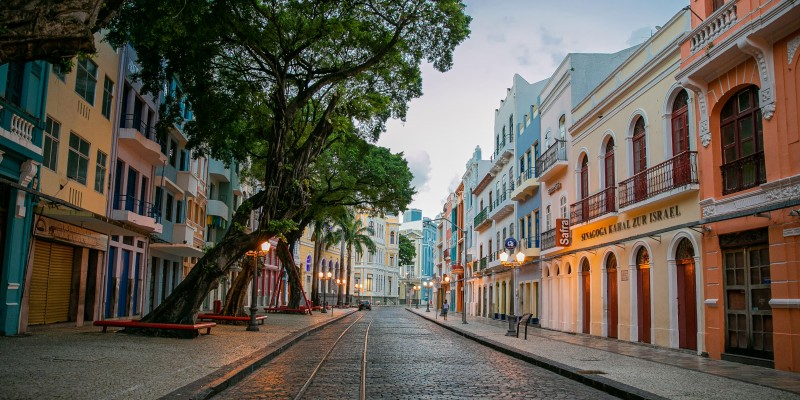
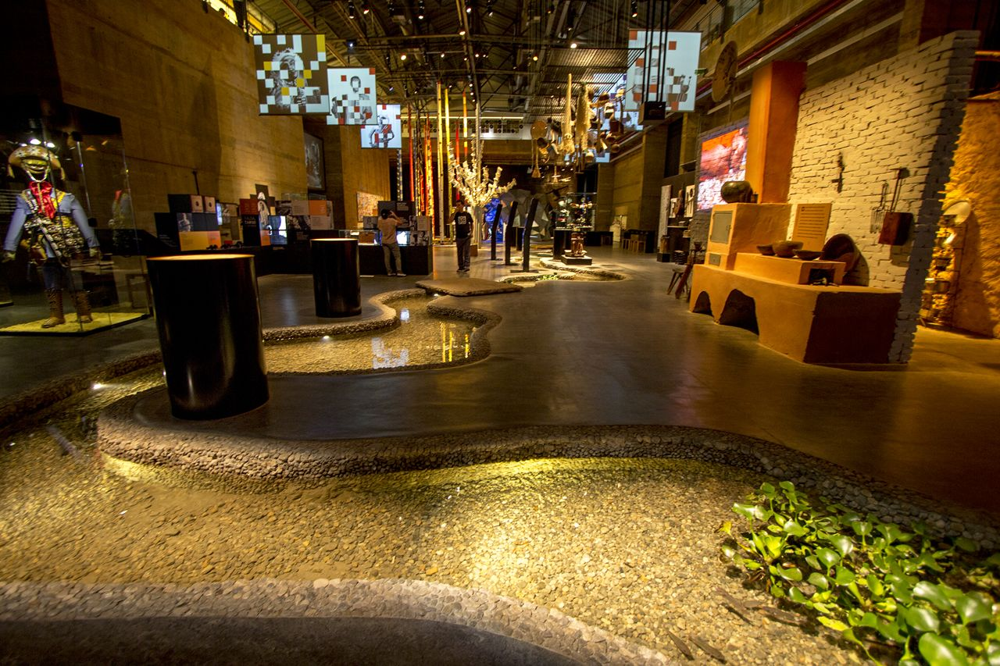
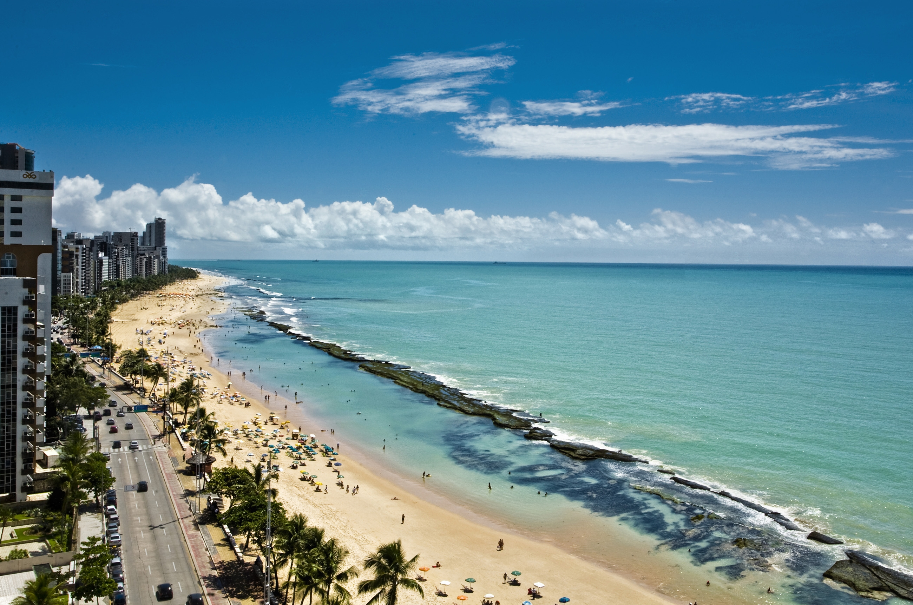
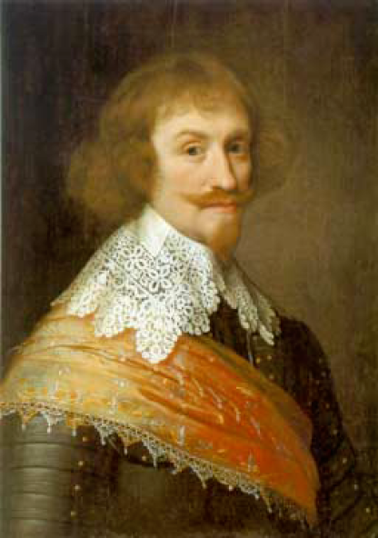
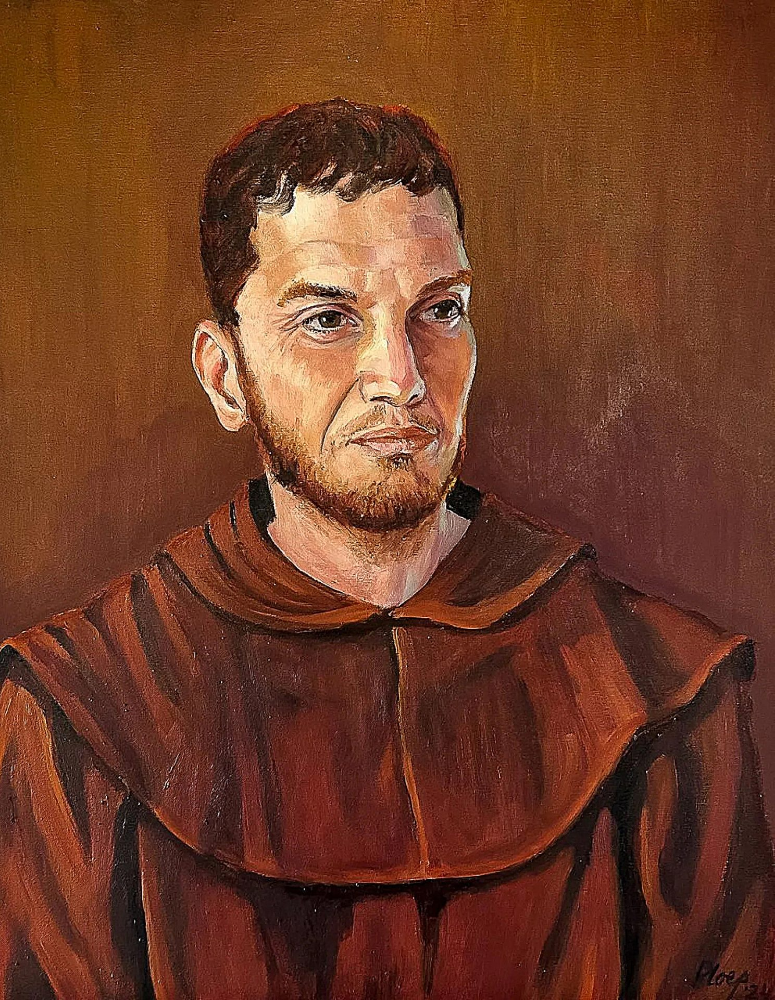
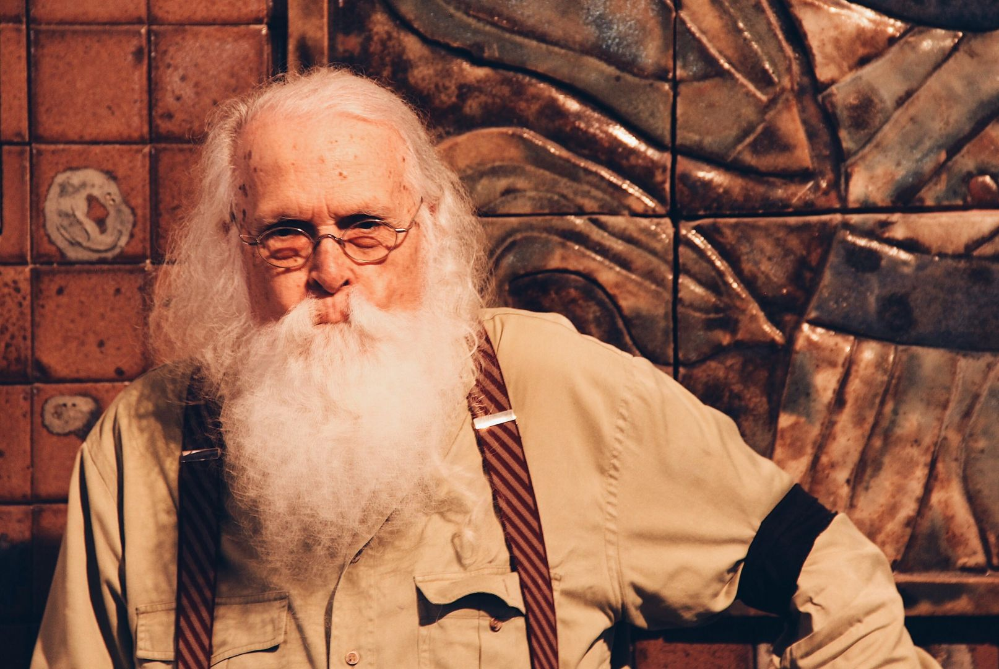
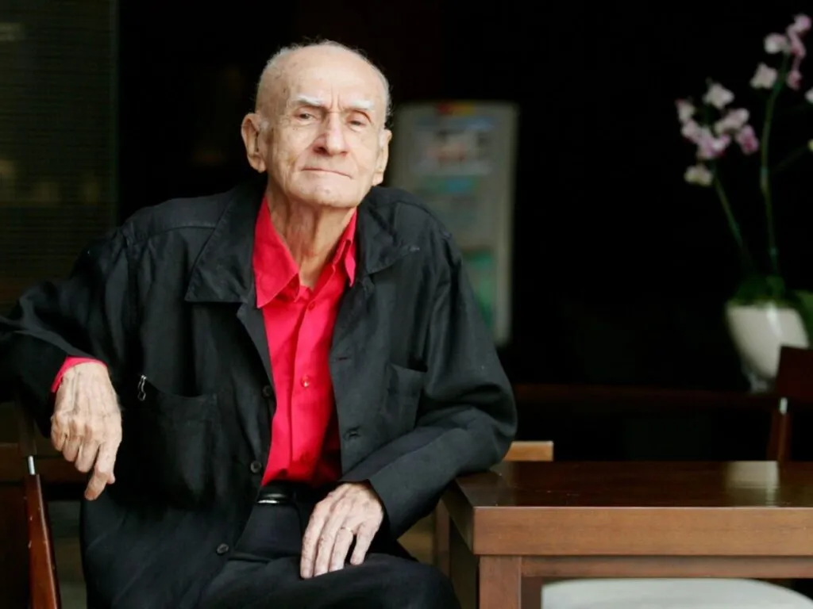
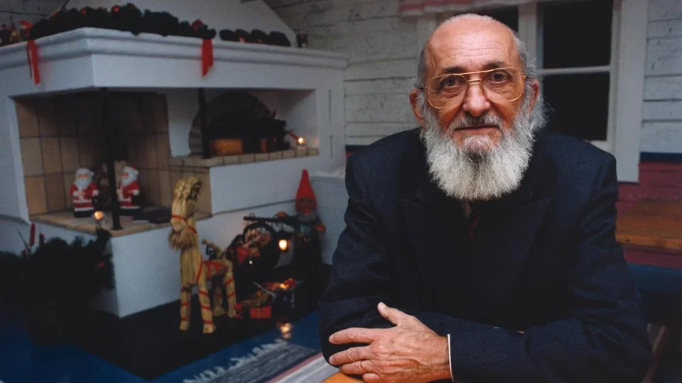
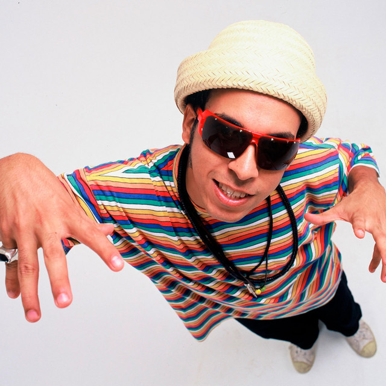

O Marco Zero, no Recife Antigo, é o ponto inicial das estradas de
Pernambuco e um dos lugares mais simbólicos da cidade. Cercado por
prédios históricos, como o antigo armazém do porto, abriga o famoso
painel de Brennand no chão, representando elementos da cultura
pernambucana. É palco de eventos, como o Carnaval, e oferece vista
privilegiada do porto e das esculturas no Parque das Esculturas. É um
espaço vibrante, turístico e cultural.

Rua do Bom Jesus
A Rua Bom Jesus, no Recife Antigo, é uma das mais antigas e
encantadoras da cidade. Conhecida por suas fachadas coloridas e pelo
clima histórico, abriga a Sinagoga Kahal Zur Israel, a primeira das
Américas. Aos fins de semana, a rua ganha vida com feirinhas, arte,
música e gastronomia. É um ponto turístico vibrante, que mistura
cultura, memória e diversidade em um dos cenários mais fotogênicos do
Recife.
Paço do Frevo
O Paço do Frevo, no Recife Antigo, é um centro cultural dedicado à
preservação e celebração do frevo, patrimônio imaterial brasileiro.
Instalado em um prédio histórico, oferece exposições interativas,
aulas de dança e pesquisa sobre a música e a cultura carnavalesca.
Colorido e vibrante, o espaço mantém viva a tradição, conectando
visitantes à energia e à história do ritmo mais marcante de
Pernambuco.

Cais do Sertão
O Cais do Sertão, no Recife Antigo, é um museu moderno dedicado à
cultura sertaneja e à obra de Luiz Gonzaga. Com tecnologia interativa,
música, luz e poesia, o espaço recria cenários do sertão e apresenta
sua riqueza simbólica. Misturando tradição e inovação, oferece
experiências sensoriais que aproximam o visitante da vida, da arte e
do legado do povo nordestino, tornando-se um dos museus mais marcantes
do Recife.

Praia de Boa Viagem
A Praia de Boa Viagem é a mais famosa do Recife, co class="personagens"nhecida por seu mar
verde-azulado, piscinas naturais formadas por arrecifes e longa faixa
de areia clara. Muito frequentada por moradores e turistas, oferece
calçadão movimentado, quiosques, ciclovia e áreas para esportes. É um
cartão-postal da cidade, com visual vibrante, clima tropical e ótima
estrutura urbana, ideal para banho, lazer e contemplação.
Instituto Ricardo Brennand
O Instituto Ricardo Brennand, na Várzea, é um dos principais espaços
culturais do Recife. Instalado em um complexo de arquitetura inspirada
em castelos europeus, reúne vasta coleção de armas, armaduras, arte e
objetos históricos. Seu acervo inclui pinturas, esculturas e a famosa
tapeçaria de Frans Post. Rodeado por belos jardins, o instituto
oferece uma imersão única na história e na cultura, sendo um dos
museus mais visitados da cidade.
Figuras Históricas

Maurício de Nassau
(1604–1679)
Maurício de Nassau foi o governador holandês que comandou Pernambuco
entre 1637 e 1644. Visionário, modernizou o Recife com obras urbanas,
pontes, canais e incentivo às artes e ciências. Trouxe arquitetos,
artistas e naturalistas, transformando a cidade em um centro cultural.
Seu governo é lembrado como um período de avanço econômico e
tolerância religiosa, deixando marcas duradouras na história local.

Frei Caneca
(1779–1825)
Frei Caneca, nascido Joaquim do Amor Divino, foi um líder intelectual
e revolucionário pernambucano do século XIX. Participou da Revolução
Pernambucana de 1817 e da Confederação do Equador, defendendo
liberdade, federalismo e autonomia regional. Poeta, jornalista e
religioso, usou a escrita como arma política. Preso após a revolta,
foi executado em 1825, tornando-se símbolo de resistência e luta pela
democracia no Brasil.

Francisco Brennand
(1927–2019)
Francisco Brennand foi um dos maiores artistas plásticos de
Pernambuco, conhecido por suas esculturas cerâmicas únicas e por criar
um universo simbólico marcado por formas orgânicas e mitológicas.
Instalou sua Oficina Cerâmica na Várzea, transformando antigas ruínas
em um espaço artístico singular. Seu trabalho, repleto de cor, textura
e identidade, tornou-se referência internacional e um marco da arte
brasileira.

Ariano Suassuna
(1927–2014)
Ariano Suassuna foi um dos maiores escritores e dramaturgos
brasileiros, defensor apaixonado da cultura nordestina. Autor de O
Auto da Compadecida, uniu humor, religiosidade e crítica social em
obras marcantes. Criou o Movimento Armorial, que valorizava a arte
erudita inspirada nas raízes populares. Professor e intelectual
carismático, deixou um legado profundo para a literatura e a
identidade cultural do Brasil.

Paulo Freire
(1921–1997)
Paulo Freire foi um educador e filósofo brasileiro, reconhecido
mundialmente por suas ideias inovadoras sobre educação libertadora.
Defendia a pedagogia do diálogo, em que alunos e professores constroem
conhecimento juntos, valorizando a experiência e a consciência
crítica. Autor de Pedagogia do Oprimido, influenciou métodos
educativos que promovem cidadania e justiça social, tornando-se um
símbolo da educação transformadora no Brasil e no mundo.

Chico Science
(1966–1997)
Chico Science foi um cantor e compositor pernambucano, pioneiro do
movimento manguebeat nos anos 1990. Misturava rock, hip hop, maracatu
e ritmos nordestinos, criando som inovador e engajado culturalmente.
Suas letras abordavam questões urbanas e sociais do Recife. Com a
banda Nação Zumbi, revolucionou a música brasileira, deixando um
legado artístico que conecta tradição regional e modernidade global.